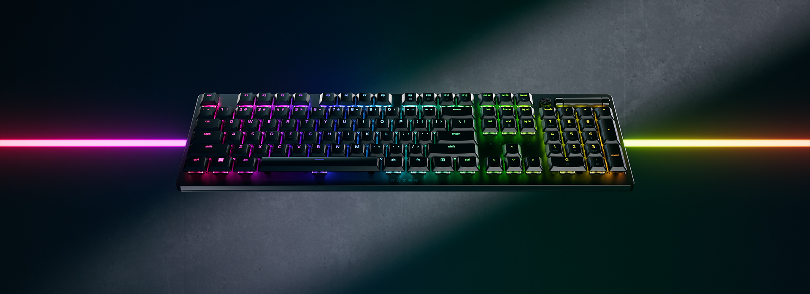
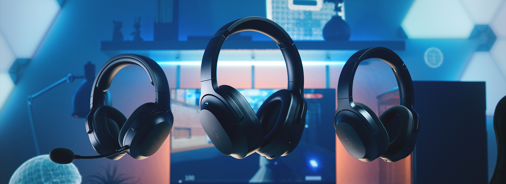
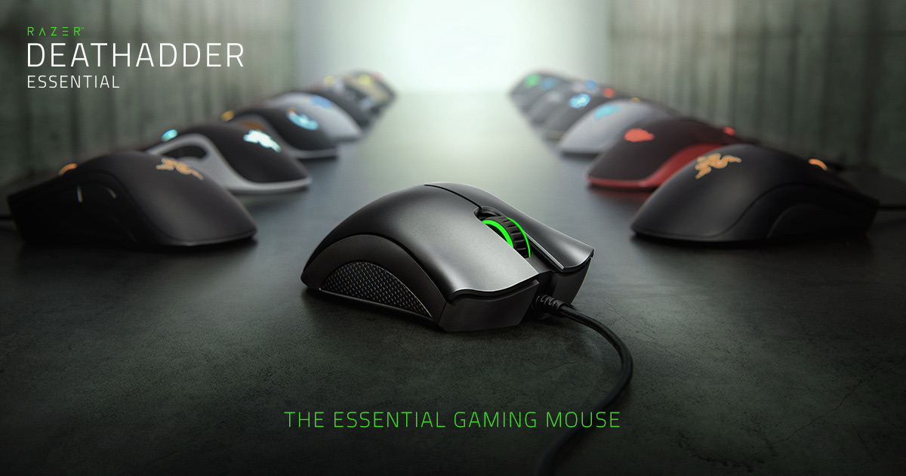

Muhammad Moiz
Online
Introducing our fastest low-profile optical keyboards, optimized for top-tier performance and durability. Featuring all-new low-profile switches within a lean, durable casing, experience ultra-responsive gaming designed for long-lasting ergonomic use.
Whether for PC or console at home, or mobile entertainment while on the go, the Razer Barracuda range is a line of versatile hybrid headsets built for audio in any environment. Play everything from your favorite games to the latest albums with just the tap of a button, thanks to Razer SmartSwitch Dual Wireless that instantly toggles between high-speed connectivity for home use and Bluetooth convenience on your mobile devices. No matter where life takes you, the Barracudas are always ready for play.
Favored by more than 15 million gamers worldwide, the Razer DeathAdder’s iconic ergonomic form enters a new era of ultra-lightweight performance. Built on a legacy of award-winning comfort and handling, its design is ideal for gamers who favor a right-handed palm and claw grip.
